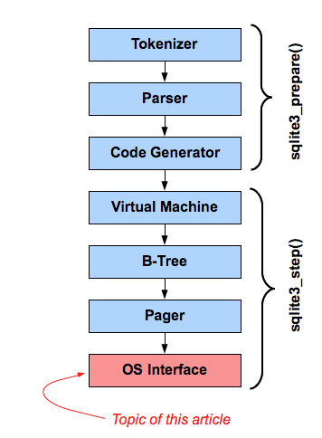

由WaterRun使用gpt-5.1-codex-mini翻译
小巧. 迅捷. 可靠.
任选其三.
任选其三.
本文介绍 SQLite 的操作系统可移植层，也称为 “VFS” —— SQLite 实现堆栈底部的模块，它提供跨操作系统的可移植性。

SQLite 库的内部组织结构可以视为右侧所示的模块堆栈。分词器、解析器和代码生成器组件用于处理 SQL 语句并将其转换为虚拟机语言或字节码中的可执行程序。粗略地说，这三层实现了 sqlite3_prepare_v2()。由这三层生成的字节码即一个 预处理语句。虚拟机模块负责运行 SQL 语句的字节码。B 树模块将数据库文件组织为多个按键排序的键/值存储，并具有对数级别的性能。Pager 模块负责将数据库文件的页面加载到内存中，实现并控制事务，以及创建和维护防止崩溃或断电后数据库损坏的日志文件。操作系统接口是一个薄层抽象，它提供了一组通用例程，以便 SQLite 能在不同操作系统上运行。粗略地说，底部四层实现了 sqlite3_step()。
本文讨论的是最底层。
操作系统接口，也称为 “VFS”，是使 SQLite 具备跨操作系统可移植性的关键。每当 SQLite 中的其他模块需要与操作系统通信时，它们便调用 VFS 中的方法。VFS 随后调用满足该请求所需的特定操作系统代码。因此，将 SQLite 移植到新的操作系统，只需编写一个新的操作系统接口层或 “VFS” 即可。
标准的 SQLite 源码树包含为 unix 和 windows 内置的 VFS。可以在启动时或运行时使用 sqlite3_vfs_register() 接口添加替代 VFS。
多个 VFS 可以同时注册。每个 VFS 都有一个唯一名称。相同进程中的不同 数据库连接 可以同时使用不同的 VFS。此外，如果单个数据库连接通过 ATTACH 命令打开了多个数据库文件，那么每个附加的数据库也可以使用不同的 VFS。
Unix 版本默认包含多个内置 VFS。Unix 的默认 VFS 称为 “unix”，并在大多数应用中使用。其他可能在 Unix 中出现的 VFS（取决于编译时选项）包括：
unix-dotfile - 使用点文件锁而非 POSIX 咨询锁。
unix-excl - 在数据库文件上获取并保持独占锁，阻止其他进程访问数据库。还将 wal-index 保留在堆中而不是共享内存中。
unix-none - 所有文件锁操作都是空操作。
unix-namedsem - 使用命名信号量进行文件锁定，仅适用于 VXWorks。
这些 Unix VFS 之间的差别仅在于它们处理文件锁定的方式 —— 它们大部分实现是共享的，并都位于相同的 SQLite 源文件中：os_unix.c。注意，除 “unix” 和 “unix-excl” 之外，其他 Unix VFS 都使用不兼容的锁实现。如果两个进程使用不同的 Unix VFS 访问相同的 SQLite 数据库，它们可能无法看到对方的锁，并可能互相干扰，导致数据库损坏。尤其是 “unix-none” VFS 根本不执行锁操作，如果两个或更多数据库连接同时使用它，极易导致数据库损坏。除非有充分理由，否则鼓励程序员仅使用 “unix” 或 “unix-excl”。
Windows 版本也包含多个内置 VFS。Windows 的默认 VFS 称为 “win32”，并在大多数应用中使用。其他可能在 Windows 构建中出现的 VFS 包括：
win32-longpath - 类似 “win32”，但路径名长度可以达到 65534 字节，而 “win32” 的路径名最多为 1040 字节。
win32-none - 所有文件锁操作均为无操作。
win32-longpath-none - “win32-longpath” 与 “win32-none” 的组合 —— 支持长路径名并且所有锁操作都是无操作。
与 Unix 类似，多数 Windows VFS 的代码也是共享的。
始终存在一个默认 VFS。在 Unix 系统上，默认为 “unix”，在 Windows 上则为 “win32”。如果没有采取其他操作，新数据库连接将使用默认 VFS。
可以通过使用 sqlite3_vfs_register() 接口并将第二个参数设置为 1 来注册或重新注册 VFS，从而更改默认 VFS。因此，如果一个（Unix）进程希望始终使用 “unix-nolock” VFS 代替 “unix”，可使用以下代码：
sqlite3_vfs_register(sqlite3_vfs_find("unix-nolock"), 1);
也可以在 sqlite3_open_v2() 函数的第四个参数中指定替代 VFS。例如：
int rc = sqlite3_open_v2("demo.db", &db, SQLITE_OPEN_READWRITE, "unix-nolock");
最后，如果启用了 URI 文件名，则可以通过 URI 中的 “vfs=” 参数指定备用 VFS。该技术适用于 sqlite3_open()、sqlite3_open16()、sqlite3_open_v2()，以及通过 ATTACH 命令将新数据库附加到现有数据库连接时。示例：
ATTACH 'file:demo2.db?vfs=unix-none' AS demo2;
URI 指定的 VFS 优先级最高。接着是作为 sqlite3_open_v2() 第四个参数指定的 VFS。如果未以其他方式指定 VFS，则使用默认 VFS。
从 SQLite 堆栈上层的角度来看，每个打开的数据库文件正好使用一个 VFS。但在实际中，某个 VFS 可能只是另一个真正执行工作的 VFS 的薄包装层。我们称这样的包装 VFS 为 “适配层（shim）”。
一个简单的适配层示例是 “vfstrace” VFS。此 VFS（在 vfstrace.c 源文件中实现）会将与每个 VFS 方法调用相关的消息写入日志文件，然后将控制权交给另一个 VFS 执行实际工作。
以下是在公共 SQLite 源码树中可用的其他 VFS 实现：
appendvfs.c - 该 VFS 允许将 SQLite 数据库附加到其他文件末尾。例如，这可用于将 SQLite 数据库附加到可执行文件末尾，当运行时，可以轻松查找到附加的数据库。如果使用 --append 选项启动 命令行 shell，它将使用该 VFS，而在使用 --append 标志时，其 .archive 命令也将使用它。
test_demovfs.c - 该文件实现了一个非常简单的名为 “demo” 的 VFS，使用 POSIX 函数如 open()、read()、write()、fsync()、close()、fsync()、sleep()、time() 等。此 VFS 仅在 Unix 系统上有效。但它并不意图取代默认的 Unix 平台上的 “unix” VFS。 “demo” VFS 故意保持极其简单，以便可用作学习辅助或构建其他 VFS 或将 SQLite 移植到新操作系统的模板。
test_quota.c - 该文件实现了一个名为 “quota” 的适配层，它强制对一组数据库文件实施累积文件大小限制。使用一个辅助接口定义 “quota 组”。quota 组是一组名称都匹配某个 GLOB 模式的文件（数据库文件、日志文件和临时文件）。每个 quota 组中所有文件的大小总和会被跟踪，如果总和超过定义的阈值，则会调用回调函数。该回调可以增加阈值，或者使本会超出限额的操作报出 SQLITE_FULL 错误。此适配层的用途之一是在 Firefox 中用于对应用数据库施加资源限制。
test_multiplex.c - 该文件实现了一个适配层，允许数据库文件超出底层文件系统的最大文件大小。该适配层向 SQLite 的上层六层呈现一个接口，使其看起来像在使用非常大的文件，实际上每个这样的大文件在底层系统上被拆分成多个较小的文件。此适配层已被用于，例如，使数据库在 FAT16 文件系统上可以增长到超过 2 gibibytes。
test_onefile.c - 该文件实现了一个名为 “fs” 的演示 VFS，展示了如何在缺乏文件系统的嵌入式设备上使用 SQLite。内容直接写入到底层介质。从该演示代码派生出的 VFS 可被具有有限闪存的设备使用，让 SQLite 成为设备闪存的文件系统。
test_journal.c - 该文件实现了一个在 SQLite 测试中使用的适配层，用于验证数据库和回滚日志的写入顺序是否正确，并且在适当时间点进行了 “同步”，以确保数据库可以随时从断电或硬重置中恢复。该适配层检查数据库和回滚日志操作的多个不变量，如果任何这些不变量被破坏，则引发异常。这些不变量反过来确保数据库始终可以恢复。使用该适配层运行大型测试用例套件可以进一步确保 SQLite 数据库不会因意外断电或设备重置而损坏。
test_vfs.c - 该文件实现了一个可用于模拟文件系统故障的适配层。此适配层在测试中用于验证 SQLite 是否能在硬件故障或其他如文件系统空间不足等难以在真实系统中测试的错误条件下合理响应。
在核心 SQLite 源代码库以及可用扩展中还有其他 VFS 实现。上述列表并非详尽，只是代表了一些可通过 VFS 接口实现的功能。
新 VFS 的实现涉及对三个对象进行子类化：
sqlite3_vfs 对象定义了 VFS 的名称以及实现与操作系统接口的核心方法，例如检查文件是否存在、删除文件、创建文件并打开以读写、将文件名转换为规范形式。sqlite3_vfs 对象还包含获取操作系统随机数、挂起进程（休眠）以及查找当前日期和时间的方法。
sqlite3_file 对象表示一个打开的文件。sqlite3_vfs 的 xOpen 方法在文件打开时构造一个 sqlite3_file 对象。sqlite3_file 在文件打开期间跟踪该文件的状态。
sqlite3_io_methods 对象保存用于与打开文件交互的方法。每个 sqlite3_file 包含一个指向其对应 sqlite3_io_methods 对象的指针。sqlite3_io_methods 对象包含用于从文件读写、截断文件、将更改刷新到持久存储、查找文件大小、锁定与解锁文件、关闭文件并销毁 sqlite3_file 对象等操作的方法。
编写新 VFS 的代码涉及为 sqlite3_vfs 对象构造一个子类，然后使用 sqlite3_vfs_register() 调用注册该 VFS 对象。VFS 实现还提供 sqlite3_file 和 sqlite3_io_methods 的子类，但这些对象不会直接向 SQLite 注册。相反，sqlite3_file 对象由 sqlite3_vfs 的 xOpen 方法返回，并且该 sqlite3_file 对象指向一个 sqlite3_io_methods 对象的实例。
本页最后更新于 2025-05-31 13:08:22Z